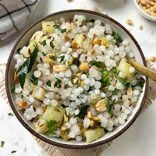
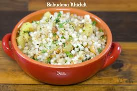

Sabudana Khichdi (or Tapioca Pearls or Sago) is a popular Indian dish that is Vegan & Gluten-Free and is usually served in breakfast. This Khichdi/Pilaf is made with Tapioca Pearls (or Sago), Potatoes, Peanuts, Herbs, and Spices. Sabudana Khichdi is a popular Indian fasting food that is usually made in every home during Navratras. This is a quick & simple recipe that can be made in minutes using overnight soaked Sabudana (or Tapioca pearls). Though Sabudana Khichdi is considered a fasting food, I like to enjoy it any day of the year. We used to enjoy it a lot all through my childhood whenever my Mom made Sabudana Khichdi.
1. Start by washing the sabudana (tapioca pearls) in a fine-mesh sieve under running water until the water runs clear. Drain well and let it sit for at least 4-6 hours or overnight to soak. It should become soft and swell in size.
2. Peel and dice the potatoes into small cubes.
3. In a dry skillet, roast the peanuts until they become golden brown and aromatic. Allow them to cool, then coarsely crush them or grind them into small pieces. Set aside.
4. In a mixing bowl, combine the soaked sabudana, diced potatoes, crushed peanuts, and finely chopped green chilies. Mix them well.
5. Heat ghee or vegetable oil in a pan. Add cumin seeds and let them splutter.
6. Add curry leaves to the pan and sauté for a few seconds until they become crisp.
7. Add the sabudana mixture to the pan and stir-fry on medium heat. Cook until the sabudana turns translucent and the potatoes are tender. This usually takes about 10-15 minutes. Stir occasionally to prevent sticking.
8. While cooking, add ground cumin, ground coriander, and red chili powder (if using) to the mixture. Season with salt and continue to cook, ensuring all the flavors are well incorporated.
9. Finish by squeezing fresh lemon juice over the khichdi for a burst of tangy flavor.
10. Garnish the Sabudana Khichdi with freshly chopped coriander leaves.
11. Serve the Sabudana Khichdi hot as a delicious and satisfying breakfast or snack, especially during fasting periods.